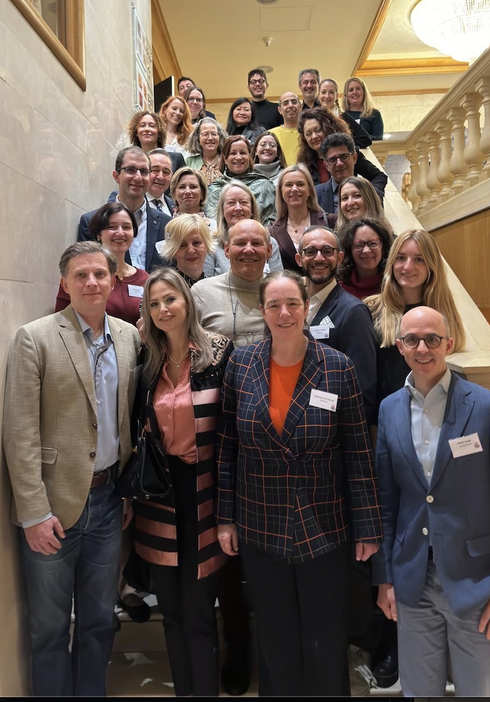
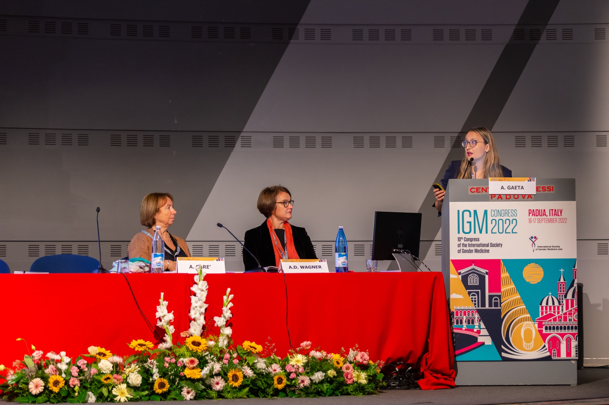

Real-World Evidence
Designing and analysing observational oncology studies with routine clinical data, registries, and multicentre research datasets.
My work sits at the intersection of biostatistics, oncology, and epidemiology. I focus on real-world data, predictive modelling, and AI applications in healthcare, with an interest in methods that are rigorous, reproducible, and clinically interpretable.
Download CV View publications
I am a biostatistician and PhD candidate in Public Health, Epidemiology, Statistics and Economics, and a Research Fellow in Biostatistics at the European Institute of Oncology in Milan.
My work involves real-world oncology data, epidemiology, and predictive modelling, using approaches such as survival analysis, competing risks, validation studies, radiomics, and AI in healthcare.
Contribution to epidemiological research, prevention strategies, and the analysis of behavioural and clinical data in melanoma.
Visit project →Development of predictive models and statistical analyses of clinical, epidemiological, and genetic data in skin cancer research (International Multicentric Collaboration).
Visit project →Methodological and statistical evaluation of AI- and radiomics-based oncology projects at the European Institute of Oncology.
Visit project →Research within the AIRC-funded project "Radiogenomics for predicting underestimation of invasiveness in DCIS diagnosed with Vacuum Assisted Breast Biopsy" (AIRC GI 2021 – DI 25816).
Visit project →Research within the grant-funded project "Ricerca Finalizzata GR-2016-02362050", contributing to the study of liquid biopsy applications in oncology.
View publication →I apply statistical modelling and reproducible data workflows to support oncology research, from study design through to analysis and reporting.
Designing and analysing observational oncology studies with routine clinical data, registries, and multicentre research datasets.
Building interpretable models for survival outcomes, competing risks, prediction, and epidemiological questions in clinical research.
Evaluating AI and imaging-derived features with attention to reproducibility, clinical utility, and transparent methodological reporting.
Studying and applying methods for the assessment of predictive models, with a focus on calibration and performance evaluation in clinical research.
View related workI publish across oncology, epidemiology, real-world evidence, radiomics, and AI applications in healthcare, with a focus on methods that can support clinical research and public health decisions.
Journal of the German Society of Dermatology
View paperBritish Journal of Cancer · Gaeta A., Nuvoli L., Doccioli C., Caini S., Saponara M., Cimminiello C., Cosma C., Palmieri G., Cossu A., Vicini F., Mazzarella L., Tosti G., Queirolo P., Gandini S.
View paperRadiology · Sattin C., Pizzi C., Summers P., Gaeta A., Gandini S., Alessi S., Petralia G. et al.
View papernpj Precision Oncology · Gaeta A., Tagliabue M., D'Ecclesiis O., Ghiani L., Maugeri P., De Berardinis R., Veneri C., Gaiaschi C., Cacace M., D'Andrea L., Ansarin M., Gandini S., Chiocca S.
View paperLoading selected publications...
Loading full publication list...


Based at IEO in Milan, I work across biostatistics, oncology, and epidemiology, with projects spanning melanoma prevention, radiomics, AI-based prediction, and breast cancer research. I also spent time as a Visiting Research Scholar at Harvard Medical School within the TIMI Study Group.
Selected oncology abstracts and poster work, with a focus on melanoma, AI in medicine, treatment evidence, and rare breast tumour research.
A comprehensive review and meta-analysis of adverse event patterns in melanoma care.
Survey-based evidence from an Italian cancer referral center on trust, use, and expectations around AI.
A retrospective analysis from a referral center on rare breast tumour pathology.
Meta-analysis of randomized phase II-III trials in BRAF V600-mutant melanoma.
Selected presentations where I have shared methodological and applied oncology work with clinical, epidemiological, and biostatistical research communities.
Presented at the 10th Congress of the International Society of Gender Medicine, with collaborators Oriana D'Ecclesiis, Marta Tagliabue, Rita De Bernardis, Sara Gandini, Mohssen Ansarin, and Susanna Chiocca.

Presented at the 32nd International Biometric Conference in Boston, evaluating how the association between melanoma and mole count varies by age group.
Feel free to get in touch if you work in oncology, epidemiology, real-world evidence, radiomics, or AI in healthcare.